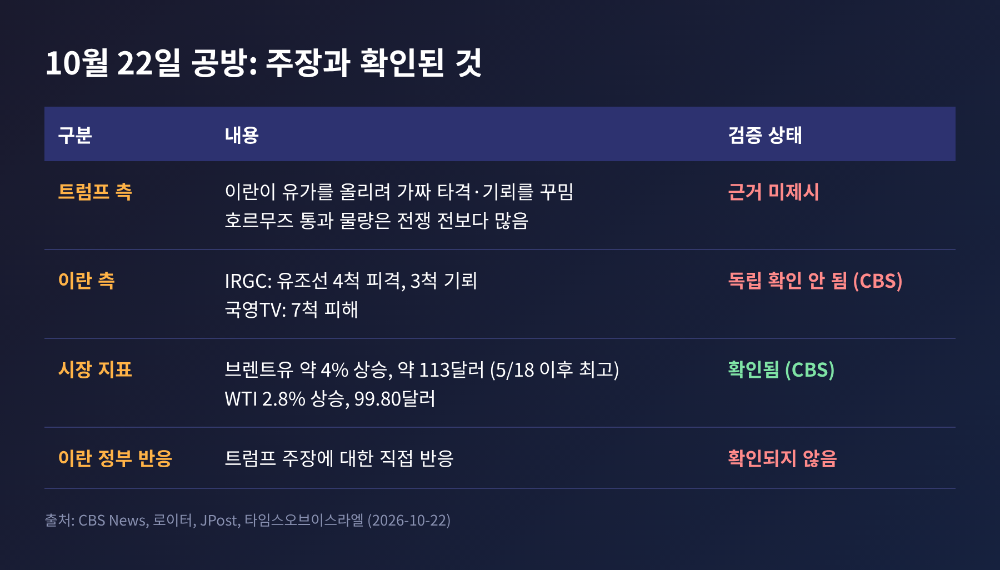
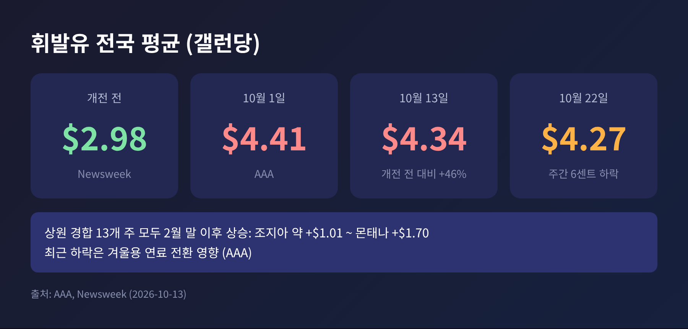
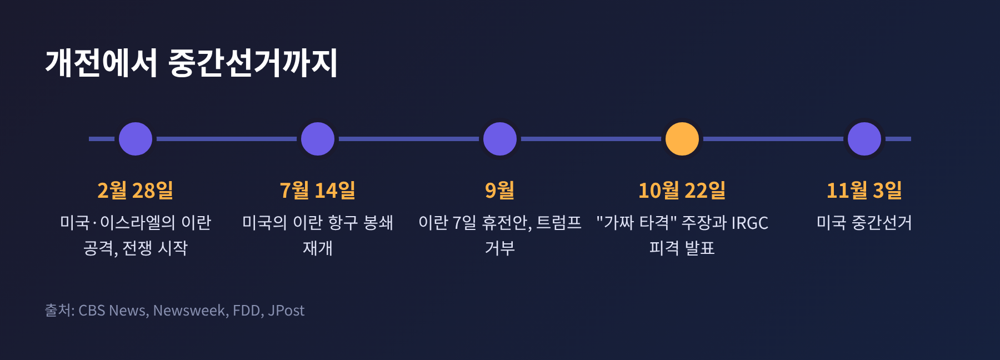
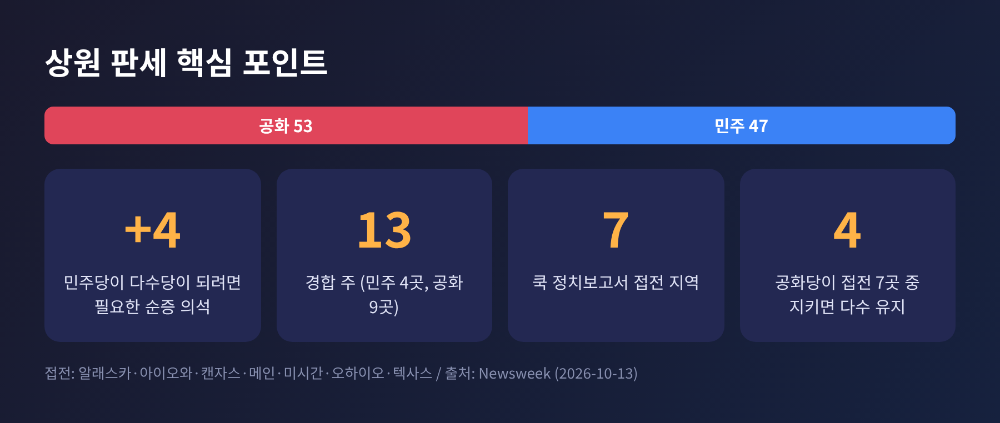

이번 글에서는 트럼프 대통령이 "이란이 선거 전에 유가를 올리려 가짜 타격을 꾸민다"고 주장한 사안을 정리해 보겠습니다. 호르무즈 선박 공격 자체가 아니라, 이 공방이 11월 3일 미국 중간선거 정치와 어떻게 맞물리는지에 초점을 둡니다. 먼저 결론부터 말씀드리면, 선박 피격이 실제였는지는 양쪽 주장 모두 아직 독립적으로 검증되지 않았고, 확인된 사실은 유가와 휘발유값이 높다는 점입니다.
트럼프 대통령은 10월 22일(목) 트루스소셜에 글을 올렸습니다. "이란이 미국 중간선거 전에 유가를 올리기 위해 할 수 있는 모든 일을 하고 있다"는 내용입니다. 이란이 "가짜 타격, 기뢰, 그 밖의 모든 것을 지어내고 있다"고도 썼습니다. 호르무즈 해협을 지나는 석유가 전쟁 전보다 많다는 주장도 덧붙였습니다. (JPost, 로이터, CBS)
같은 날 이란 쪽 발표는 정반대였습니다. 혁명수비대(IRGC) 해군은 북부 페르시아만에서 선박 간 환적 중이던 유조선 4척이 동시에 피격돼 불타고 있다고 밝혔습니다. 3척은 호르무즈 서쪽에서 기뢰에 걸렸다고 했습니다. 이란 국영TV는 모두 7척이 피해를 입었다고 보도했습니다. (로이터, CBS, 타임스오브이스라엘)
여기서 구분이 필요합니다. CBS는 이란 측 주장을 독립적으로 확인하지 못했다고 밝혔습니다. 선박 국적과 사상자 정보도 공개되지 않았습니다. 트럼프 대통령의 "통과 물량이 더 많다"는 주장 역시 근거 자료가 제시되지 않았습니다. 필자가 확인한 범위에서는 트럼프 주장에 대한 이란 정부의 직접 반응도 찾지 못했습니다.

사실로 볼 수 있는 것부터 보겠습니다. 브렌트유는 10월 22일 약 4% 올라 배럴당 약 113달러가 됐습니다. 5월 18일 이후 최고 수준입니다. 미국 기준인 서부텍사스산 원유(WTI)도 2.8% 올라 99.80달러였습니다. (CBS) 한 분석가의 계산에 따르면 개전 직전인 2월 27일 종가 72.48달러와 비교해 약 56% 높은 수준입니다.
반면 아래는 아직 주장의 영역입니다.
한 가지 짚어둘 대목이 있습니다. 미국은 7월 14일 이란 항구 봉쇄를 재개했고, 미 중부사령부는 100일간 250억 달러어치 이란산 원유 수출을 막았다고 밝혔습니다. (CBS) 이란의 원유 수출이 막힌 상황이라면, 유가 상승이 이란에 얼마나 이득인지는 단순하지 않습니다. 이는 필자의 해석일 뿐이고, 이란의 의도를 입증하는 자료는 어느 소스에도 없었습니다.
예전엔 중동 소식이 유권자의 주머니와 멀게 느껴졌습니다. 지금은 주유소 가격표로 곧바로 이어집니다.
미국자동차협회(AAA) 집계로 전국 평균 휘발유 가격은 10월 1일 갤런당 4.41달러, 10월 22일 4.27달러였습니다. 최근 하락은 겨울용 연료 전환의 영향이 큽니다. 그래도 9월 월평균 4.33달러는 종전 9월 기록보다 50센트 높았습니다. 뉴스위크에 따르면 미국과 이스라엘의 이란 공격 이전 평균은 2.98달러였습니다. 10월 13일 4.34달러는 46% 넘게 오른 값입니다.

경합 지역도 예외가 아닙니다. 상원 경합 13개 주 전부에서 2월 말 이후 가격이 올랐고, 오름폭은 조지아의 약 1.01달러부터 몬태나의 1.70달러까지였습니다. (뉴스위크)
여론은 어느 쪽에도 마냥 유리하지 않습니다. 로이터/입소스 조사에서는 유권자의 78%가 트럼프 행정부 정책이 비용 상승의 원인이라고 답했습니다. 공화당 지지층도 64%가 같은 응답이었습니다. 다만 폴리티코의 10월 초 조사에서는 유가가 내리거나 분쟁이 끝나도 공화당에 투표할 가능성이 커지지는 않는다는 응답이 다수였습니다. 가격이 정치를 좌우하는 만큼, 가격을 둘러싼 책임 공방도 격해질 수밖에 없는 구조입니다.
이번 전쟁은 2월 28일 시작됐습니다. 이란은 9월에 7일간의 휴전안을 내놓았습니다. 미국의 해상 봉쇄 해제, 석유 제재 해제, 호르무즈 재개, 동결 자산 해제가 골자입니다. 트럼프 대통령은 이를 9월에 거부했습니다. 파키스탄과 카타르가 중재를 이어가고 있고, 10월 22일 루비오 국무장관이 카타르 지도부에 감사를 표했습니다. (CBS)
양측 입장은 이렇게 갈립니다.

상원은 현재 공화당이 53대 47로 앞섭니다. 민주당이 다수당이 되려면 순증 4석이 필요합니다. 경합 13개 주 가운데 민주당 의석은 4곳, 공화당 의석은 9곳입니다. 쿡 정치보고서는 알래스카, 아이오와, 캔자스, 메인, 미시간, 오하이오, 텍사스 7곳을 접전으로 분류했고, 공화당은 이 가운데 4곳만 지켜도 다수를 유지합니다. (뉴스위크)

이 구도에서 "이란이 유가를 조작한다"는 주장은 정치적으로 두 가지 효과를 냅니다. 가격 상승의 책임을 외부 적대 세력에 돌리고, 지지층 결집의 소재가 됩니다. 반대로 민주당과 비판 진영은 정책 책임론을 꺼낼 수 있습니다. 어느 쪽이 설득력을 얻을지는 아직 알 수 없습니다. 사실 확인이 되지 않은 주장은 유가가 오르는 한 양쪽 모두에게 쓸모 있는 소재이기 때문입니다.
트럼프 대통령은 10월 22일 "머지않아 어떤 식으로든 일이 벌어질 것"이라며 "대부분의 사람들은 선거 이후로 보는 것 같다"고 말했습니다. 뉴욕타임스는 미국과 이스라엘이 선거 이후 재공습 계획을 마련했고, 이달 중 타격 가능성은 낮지만 있다고 전했습니다. (타임스오브이스라엘 인용) 이란도 공습이 재개되면 미군 기지와 걸프 인프라를 타격하겠다고 위협했습니다. (WSJ, FDD 인용)
필자가 보는 관전 포인트는 셋입니다.
정리하면 이렇습니다. 선박 피격이 사실인지, 유가를 올리려는 연출인지는 아직 아무도 입증하지 못했습니다. 확인된 것은 브렌트유 약 113달러, 전국 휘발유 평균 4달러대 초반이라는 숫자와 11월 3일이라는 날짜입니다.
"주장은 정치의 언어이고, 가격은 유권자의 언어다."
다음 주 유가가 어디로 향하는지 지켜보신다면, 이 공방의 진짜 무게도 가늠하실 수 있을 것입니다.